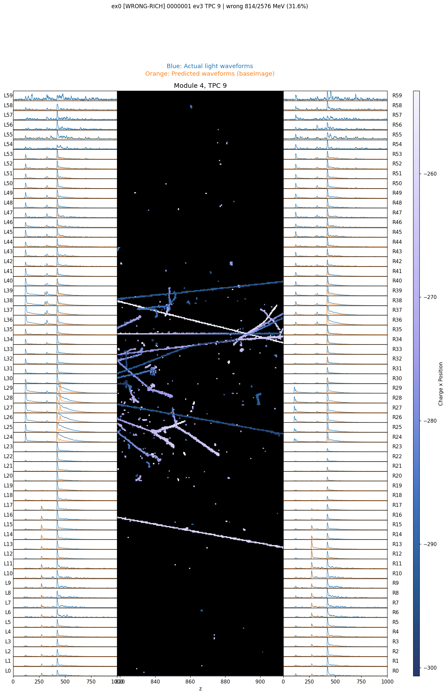
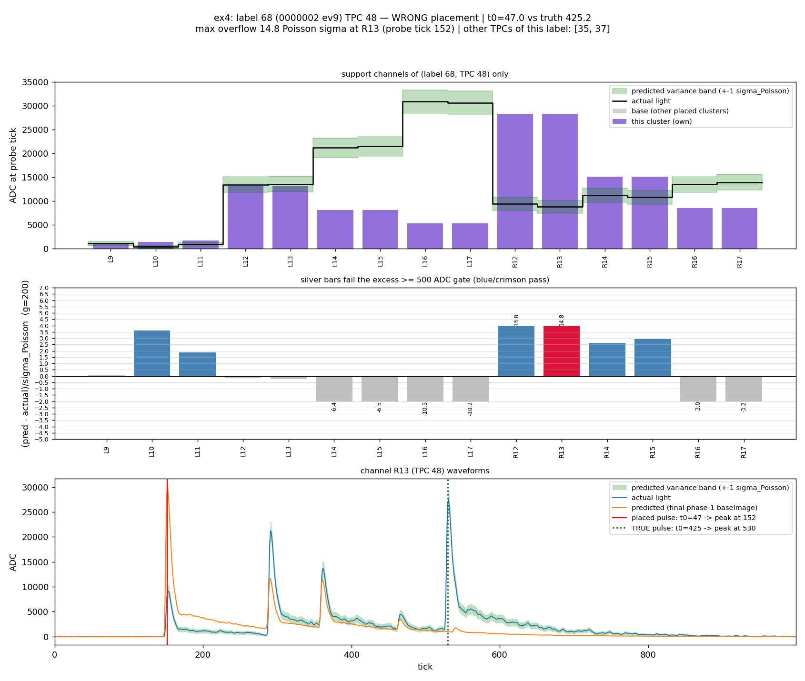
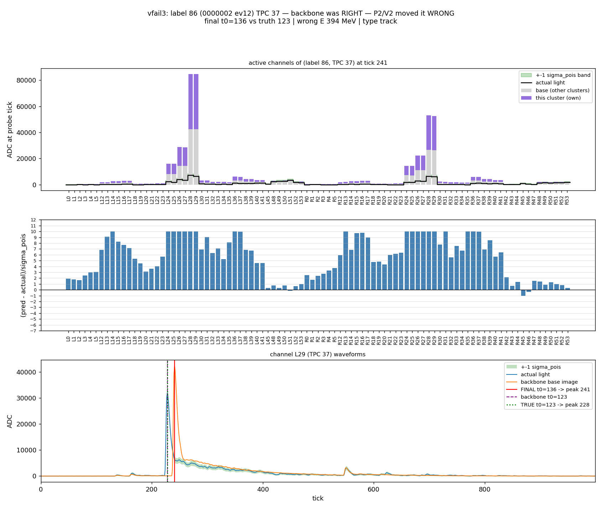
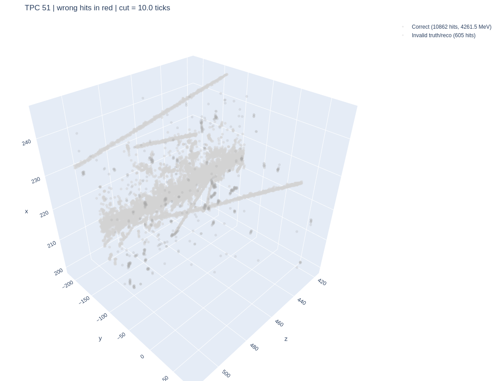
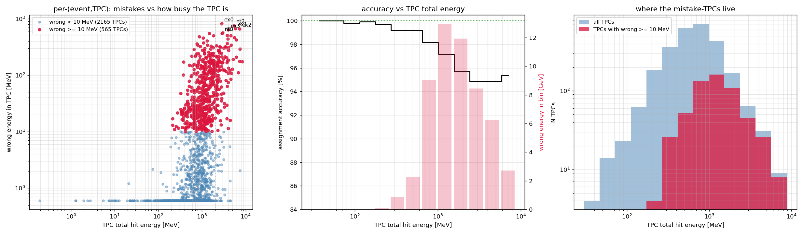
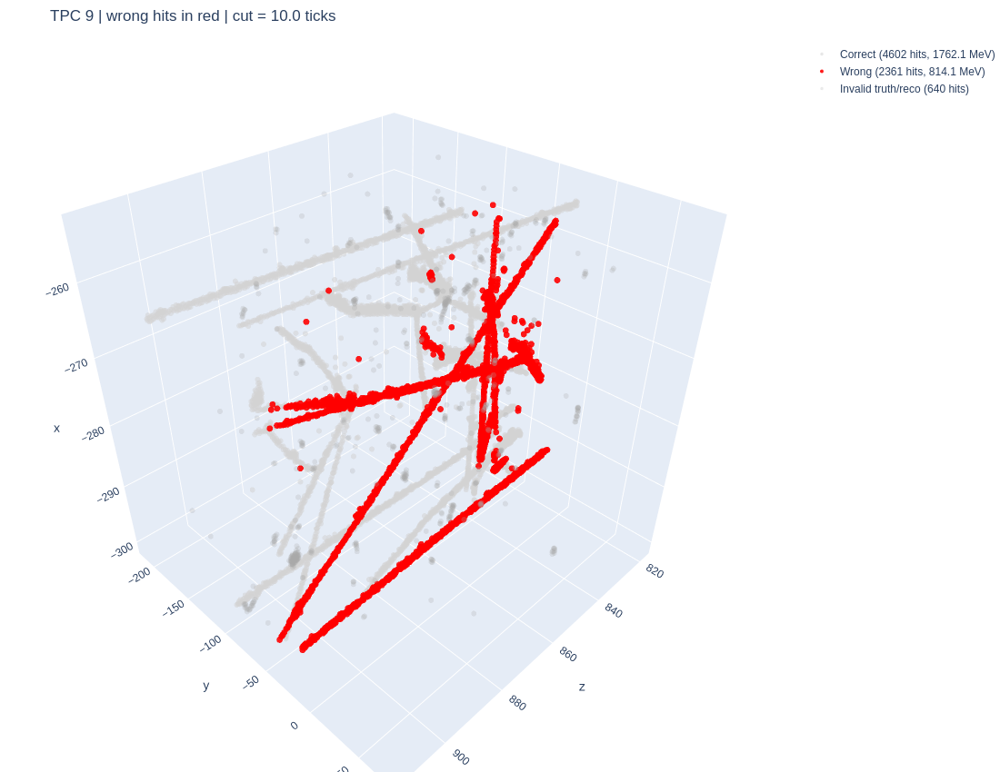

MiniProdN5p1 development study · 39 events, ~2 TeV of hits · 2026-07
Poisson weights (200 ADC ≈ 1 photon); prediction clipped at the 60780 ADC saturation point; scanned over all shifts at once with an FFT.

One TPC: recorded light (blue), model light from all placed clusters (orange), and the charge tracks in between.
Band width s swept 0.2 → 0.9: accuracy saturates at s = 0.6 — and the N=5 cap keeps even s = 0.9 at ~5 s/event.
Trigger operating point: catches ~50% of wrong placements at ~12% false-alarm — and false alarms only cost a re-check.

A wrongly placed track: predicted (purple+gray) overshoots the recorded light (black) on many channels at once — the overflow signature.

The motivating failure: a downstream move planted an 80k-ADC pulse against a 32k flash — 10σ overflow on nearly every channel. Now caught and corrected on the spot.
Saturation hygiene throughout: channels clipped >4 ticks are vetoed from every scan and probe; predictions clipped at the ADC ceiling before any comparison.
| configuration | backbone (phase-1) | final (post-V2) |
|---|---|---|
| v0.1 (production order) | 95.1% | 95.9% |
| v0.2 ordering (s = 0.6) | 96.1% | 96.4% |
| + cosine loss · defer · swap · rescue | 96.4% | 96.6% |
| + saving algorithm (A / B / N=1) | 97.7% | 97.0% |
| + placement police | — | 97.25% |

A typical bright TPC after the full chain (4.3 GeV of hits): every hit within ±10 ticks — no red anywhere.

Left: wrong energy vs TPC activity, one point per (event, TPC). Middle: accuracy falls monotonically with TPC busyness. Right: mistake-TPCs are exactly the busy tail.
| TPC total E | share of wrong | accuracy |
|---|---|---|
| < 300 MeV | 0.3% | 99.7% |
| 300–500 | 2.5% | 99.3% |
| 0.5–1 GeV | 20% | 98.4% |
| 1–2 GeV | 38% | 96.6% |
| ≥ 2 GeV | 39% | 95.2% |
95.1% → 97.25%
(clusters ≥ 50 MeV: 97.4% at full coverage; quiet TPCs: > 99.4%)
The one remaining frontier is the showering region. Our mistakes are confined to TPCs dominated by large showers / dense activity, where the whole light wall is lit and template matching degenerates. A dedicated shower-recognition path is the next development: detect that a TPC is shower-dominated and hand it to a separate algorithm rather than the standard scan.

The target of the next algorithm: a 2.8 GeV TPC where dense activity misleads whole clusters at once (red = wrong).